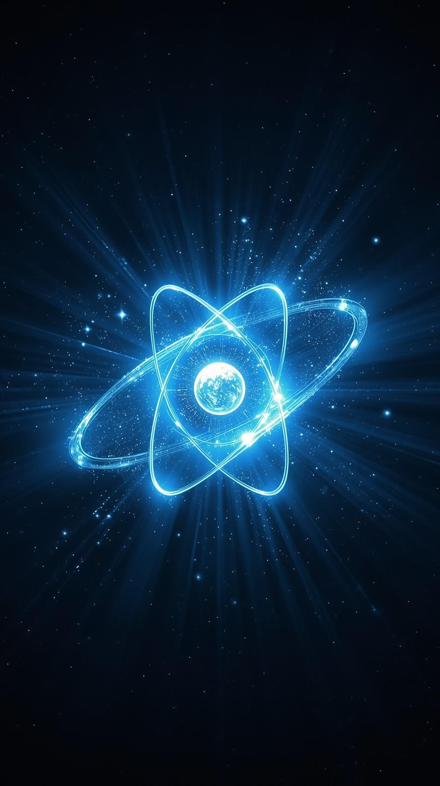

A jövö energia forrása?
Ezért bár sokan ellenzik működtetésüket, egyesek szerint elengedhetetlenek az éghajlatváltozással kapcsolatos célok elérésében. Széles körű elterjedésüknek a fenti aggályok mellett viszont az is gátat szab, hogy megépítésük komoly szakértelmet, nem mellesleg rengeteg pénzt igényel, ráadásul a korábbi tapasztalatok szerint építésük szinte minden esetben éveket csúszik.
Várhatóan az atomenergia zöld címkét kap és belekerült az úgynevezett uniós taxonómia-rendeletbe, melynek célja, hogy EU-szerte ösztönözze a pénzügyi forrásoknak a környezeti szempontból fenntartható tevékenységek felé irányuló áramlását. Pár hónappal korábban az Európai Bizottság tudományos testülete (Közös Kutatóközpont, JRC) is megállapította, hogy a nukleáris energiatermelés fenntartható gazdasági tevékenység. A jelentést a német környezetvédelmi miniszter támadta, miután szerinte a Bizottság tudományos testülete nem foglalkozott érdemben az esetleges súlyos nukleáris balesetek lehetséges környezeti hatásaival, és a radioaktív hulladék ártalmatlanításának, illetve elhelyezésének problémáját sem vizsgálta részleteiben.
A nukleáris energiatermelésnek kiforrott technikája van: az uránatomok hasadása útján termel hőenergiát, a hőből gőzt állítanak elő, amelyből a fosszilis tüzelőanyagok által kibocsátott káros melléktermékek nélkül hoznak létre elektromos áramot. Az amerikai Nukleáris Energia Intézet szerint az atomenergiának hála az Egyesült Államok több mint 476 millió tonna szén-dioxid-kibocsátást került el 2019-ben. Ez 100 millió autó kibocsátásának felel meg, és több, mint az összes többi tiszta energiaforrás együttes eredménye. Vissza a főoldalra
.jpg)